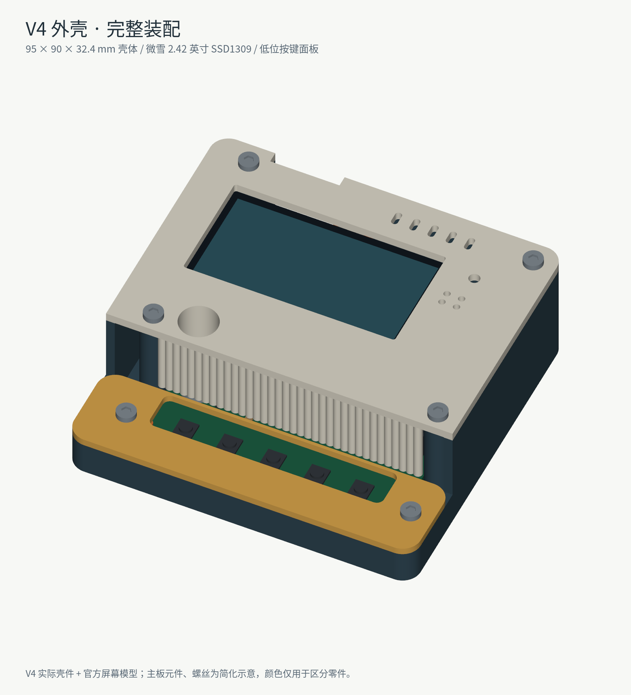

V4外壳与装配
本版针对70×70mm主板及微雪2.42英寸白色OLED模块设计。先确认手中屏幕型号与尺寸，早期72×43mm其他模块不属于这个V4适配对象。
推荐先看装配图解，再对照实际样板试装。

| 目录或文件 | 用途 |
|---|---|
| 9个STL：8个装配件加1个配合测试件，供切片/3D打印 | |
| step | 分件STEP，便于CAD查看和继续改尺寸 |
| 总装STEP | 带主板、屏幕与紧固件示意的完整装配模型 |
| 总装GLB | 在支持GLB的3D查看器中旋转观察 |
| 爆炸图 | 查看零件分层、装配关系 |
| EDA外壳工程 | 对应V4壳体的EDA工程副本，不是新修订的PCB制造版本 |

原始CAD脚本及其V3依赖一起保留于原始外壳工作区，相邻目录名未改变。部分旧脚本包含原机器绝对路径、中文字体路径或EDA API写操作，移动到新电脑后须先读代码、改路径；不需要运行这些脚本才能使用STL或STEP。
已有检查覆盖网格和模型静态干涉，尚无整套外壳实物装配通过的记录。先打印配合测试件并试装，再确认螺钉、排线弯折、实际焊接高度。先把主板功能调通再合盖，避免误把接线问题当成外壳问题。